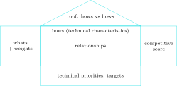

Definition
Evaluation and improvement tools used after preliminary design: QFD, value analysis, FMEA. QFD asks "are we designing what customers want?"; FMEA asks "how can the design fail, and what do we do about it?".
Model
QFD — house of quality
Rows = customer requirements (whats) with importance weights; columns = technical characteristics (hows); the body = relationship strength (strong ●, medium ○, weak △); the roof = correlations among hows (strong positive … strong negative); right side = competitive score (1–5) against rivals; bottom = technical evaluation and targets.
Example — promotional USB data storage pen:
| What (customer) | Importance | Strongest related hows |
|---|---|---|
| Size | 4 | casing material, flash chip |
| Robustness | 3 | casing material, profile |
| Attach to key ring | 2 | casing, finish |
| Capacity | 7 | flash chip |
| Print logo | 6 | finish, profile |
| Price | 10 | casing, flash chip, connector |
Hows: casing material, flash chip, profile, finish, connector. Technical priority of a how = (e.g. 9/3/1 for strong/medium/weak).
FMEA — Failure Mode and Effects Analysis
System function → failure mode ← potential causes; failure mode → effects. Linked to component proving, mistake proofing (poka-yoke) and continuous improvement programmes. Traditional risk score:
(each 1–10; prioritize the highest RPN).Example — disk brake system, failure mode "vehicle does not stop":
| Cause | Prevention | Detection | Action |
|---|---|---|---|
| linkage corrosion | std MS-845 | env. stress test | stainless steel |
| cylinder vacuum lock | carry-over | pressure test | none |
| fluid loss: connector | torque | vibration step- | crimp → quick- |
| backs off | requirements | stress test | connect connector |
| fluid loss: lines crimped | std MS-1178 | DOE resiliency | MS-1178 → MS-2025 |
Worked example
FMEA with RPN: corrosion S=10, O=4, D=3 → 120; connector S=10, O=3, D=6 → 180; cylinder lock S=10, O=1, D=4 → 40. Act first on the connector (highest RPN), then corrosion. QFD: price (10) with strong relation (9) to flash chip contributes 90 to that how's priority.
Pitfall
In QFD the weights come from customers, not engineers. In FMEA a high-severity mode can deserve action even with a moderate RPN.
Recall
Sketch the house of quality and name its six parts; build one FMEA row with cause, prevention, detection, action and RPN.
Picture

The house turns the voice of the customer into weighted engineering targets.